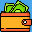

<nav class="navbar navbar-expand-md sticky-top navbar-light" ref="navbarRef" @click="closeNabvar">
  <div class="container-fluid">
    <router-link class="navbar-brand nav-link nav-logo" to="/">      
      
      <span>AhorroFácil</span>
    </router-link>   
    <button class="navbar-toggler" type="button" data-bs-toggle="collapse" data-bs-target="#navbarSupportedContent" aria-controls="navbarSupportedContent" aria-expanded="false" aria-label="Toggle navigation">
      <span class="navbar-toggler-icon"></span>
    </button>
    <div class="collapse navbar-collapse" id="navbarSupportedContent">
      <ul class="navbar-nav">
        <li class="nav-item"><router-link class="nav-link" :class="{ active: $route.path === '/' }" aria-current="page" to="/">Inicio</router-link></li>
        <li class="nav-item"><router-link class="nav-link" :class="{ active: $route.path === '/registro' }" to="/registro">Registro</router-link></li>
        <li class="nav-item"><router-link class="nav-link" :class="{ active: $route.path === '/login' }" to="/login">Login</router-link></li>
        <li class="nav-item"><router-link class="nav-link" :class="{ active: $route.path === '/dashboard' }" to="/dashboard">Dashboard</router-link></li>
        <li class="nav-item"><router-link class="nav-link" :class="{ active: $route.path === '/gasto' }" to="/gasto">Gasto</router-link></li>
        <li class="nav-item"><router-link class="nav-link" :class="{ active: $route.path === '/contacto' }" to="/contacto">Contacto</router-link></li>
        <!-- <li class="nav-item"><router-link class="nav-link" :class="{ active: $route.path === '/test' }" to="/test">Test</router-link></li> -->
        <!-- <li class="nav-item"><router-link class="nav-link" :class="{ active: $route.path === '/404' }" to="/404">404</router-link></li>
        <li class="nav-item"><router-link class="nav-link" :class="{ active: $route.path === '/formsuccess' }" to="/formsuccess">success</router-link></li> -->
      </ul>
      <button class="btn mx-md-3 my-sm-0 btn-toggle-mode" type="button" @click="toggleDarkMode" aria-label="Toggle theme">
        <i :class="{ 'bi bi-brightness-high-fill': $root.isDarkMode, 'bi bi-moon': !$root.isDarkMode }" style="fill: currentColor"></i>
      </button>
    </div>
  </div>
</nav>